Sicherheits- und Gesundheitsschutzkennzeichnung, Flucht- und Rettungsplan |
Handzeichen
Beispiel: Halt Gefahr!
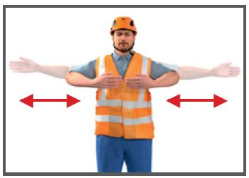
| Geometrische Form | Bedeutung | Sicherheitsfarbe | Anwendungsbeispiele | Beispiel |
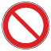 Kreis mit Diagonalbalken |
Verbot | Rot |
|
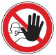 |
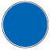 Kreis |
Gebot | Blau |
|
|
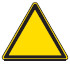 Gleichseitiges Dreieck |
Warnung | Gelb |
|
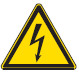 |
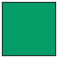 Quadrat |
Gefahrlosigkeit | Grün |
|
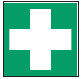 |
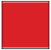 Quadrat |
Brandschutz | Rot |
|
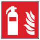 |
Sicherheitsmarkierungen
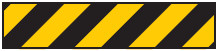
In Arbeitsstätten
Auf Baustellen
Darstellung
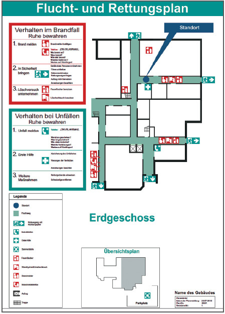
07/2021